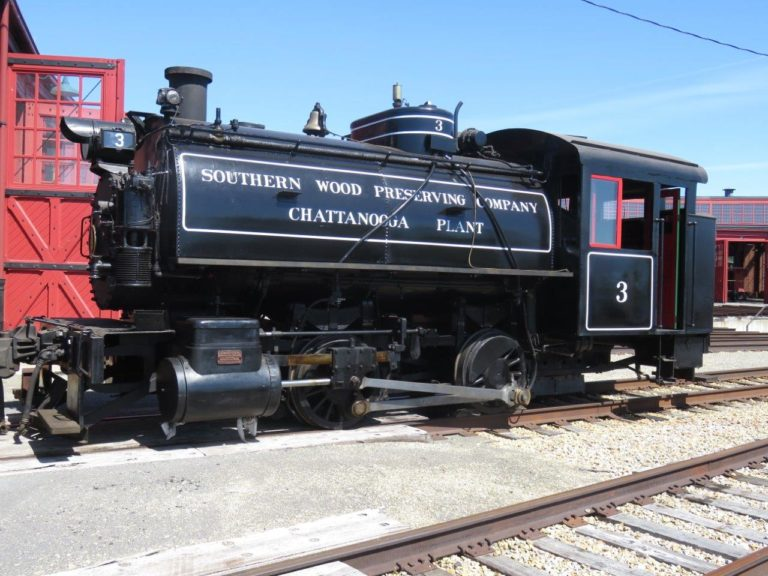
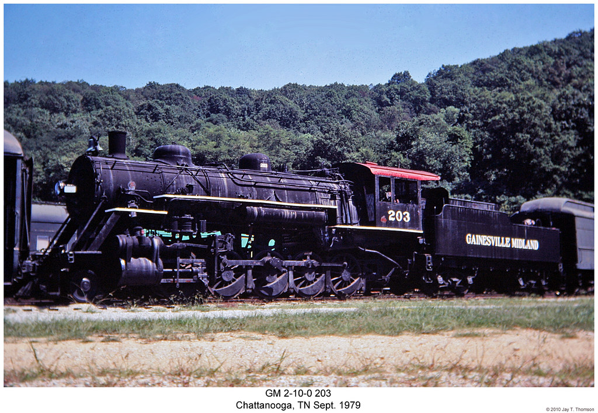
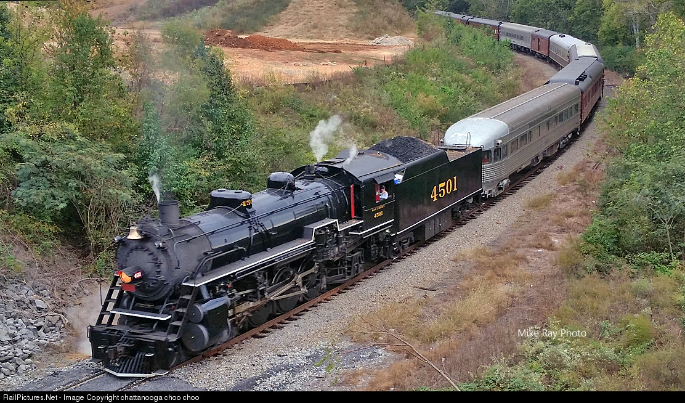
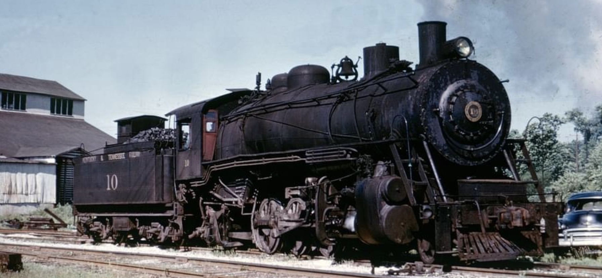

Locomotives In Depth
Southern Wood Preserving Company 3
Built in January 1926 at ALCO's Schenectady Works in New York. Sure enough, No. 3 was purchased from ALCO by the Southern Wood Preserving Company in 1928 for use at its plant in Chattanooga, Tennessee. Rolling on 40-inch driving wheels and weighing a beefy 49 tons, this little locomotive switched flatcars carrying raw timbers into the plant and complete, creosote-treated railroad ties back out. By 1953 this little locomotive was one of only three steam locomotives left in the city of Chattanooga and by 1956 that had dropped to two, and during that she was the only one left operating. After retirement in 1961, No. 3 was acquired by the then-new Tennessee Valley Railroad Museum founder Paul Merriman. She was the first engine the museum was to ever operate. Paul Merriman, eventually donated No. 3 from to museum. In 1994 the engine was sold by the Merriman family to Jerry Jacobson. It was then trucked to Coshocton, Ohio to be set on the rails of Jerry's Ohio Central Railroad. The small 0-4-0T received repairs and was run numerous times at the OC's Morgan Run shops.
Gainesville Midland 203
Alabama, Tennessee & Northern 402 was ordered by the Alabama, Tennessee & Northern in 1928 and built by the Baldwin Locomotive Works. She along with her 2 sisters the 401 and 403 where all locomotive that wrote in on 52″ drive wheels. These engines lugged freight trains for the AT&N under the railroad's “Lindbergh” fast freight branding, and wore special plates on their headlights proclaiming the service. The reason these trains were named as such was it was a reference to the previous year's feat of aviation. Because of World War II's enormous increase in the volume of rail traffic through the Port of Mobile, the War Production Board authorized the AT&N to purchase diesel locomotives. The AT&N retired all of its steam locomotives by 1946, being one of the first railroads of its size to do so. During that year, 402 was sold to the Georgia Car & Locomotive Company, a dealer in used railroad equipment. Then the Gainesville Midland RR purchased the 402 so she was moved to their tracks, renumbered to the 203, and saw service there until 1959. She was donated to the Altanta Chapter of the National Railway Historical Society, then in 1961 she was leased to the Tennessee Valley Railroad Museum and put on static display. Plans where made to transfer ownship to TVRM, but the Altanta Chapter didn't do their side of the paperwork. Her current status is that she is stored awaiting cosmetic restoration.
Southern 4501
Southern 4501 was ordered by the Southern Railway in October of 1911 with the Baldwin Locomotive Works. She was built that same month and delivered to the Southern with 33 sisters, they would later be joint by 148 more sisters toaling up to 181 engines. 4501's career was long and varied as she started her service on the Cincinnati New Orleans & Texas Pacific subroad of the company. It was on this sub up at the Ferguson shops that she was dropped from an overhead crane and bent her frame during a regular shopping, and what was only meant to be a month out of service quickly turned into 8 months out of service. She was later moved to Princeton, Indiana during the late 1930s it was here she served her finally years on the Southern, for in July of 1948 her fire was droped and she was since to the storage lines of Princeton, she was evade the final run to the scrappers torch thanks to the Kentucky & Tennessee Railway. On the K&T she renumbered to 12 and was the largest engine they had ever owned and the crews there fell in love with her as she was able to pull 90 tons more up the mountain her largest stablemate No.11. She worked on the K&T for 15 years before be purchased by TVRM founder Paul Merriman. Paul would run the 4501 to Chattanooga, TN. to join the rest of TVRM's collection and would later run fan trips on the mainline.
Kentucky & Tennessee 10
Kentucky & Tennesee 10 was ordered by the K&T in May of 1920 with the Baldwin Locomotive Works. She was built that same month and delivered to the K&T, she would be the only locomotive ever built to this design. 10's career was long and dull, compared to her later stablemate 4501 who worked on a class 1 railroad, the K&T was a Class 3 short line that only covered 25 miles. At the time she was built she was the largest locomotive the K&T had ever seen, but that claim to fame would only last 2 years before the larger No.11 was order and delivered in 1922. For the next 45 years she hald coal out the mountains dow to the interchange with the Southern Railway at Sterns, Ky. In 1965 she was retired in favor of diesels and that should have been the end, but she was brought by TVRM that same year. TVRM had wanted to get No.11, but they had been beaten to the punch by the US Army, so not looking to go home empty handed they purchased No.10. Once moved to TVRM's site in Chattanooga they repainted her into Southern Railway's Subroad New Orleans & Northeastern paint with the number 6910. It was in this paint that she made her first run for the museum that same year on fan trips between Chattanooga and Cleveland, TN.Yet, the locomotive's deteriorating condition curtailed its run. The second round trip it made that day turned out to be its last. Its final operation under steam occurred in the early to mid-1970s. The K&T 10 is currently in storage and out of service.
